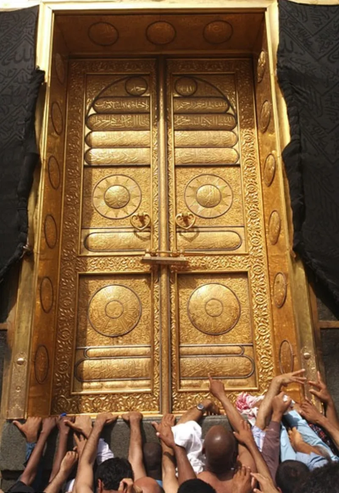
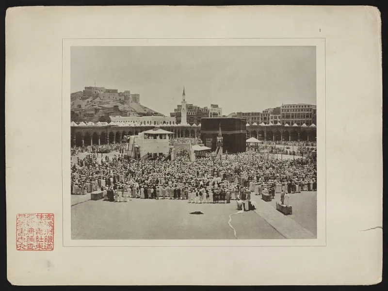
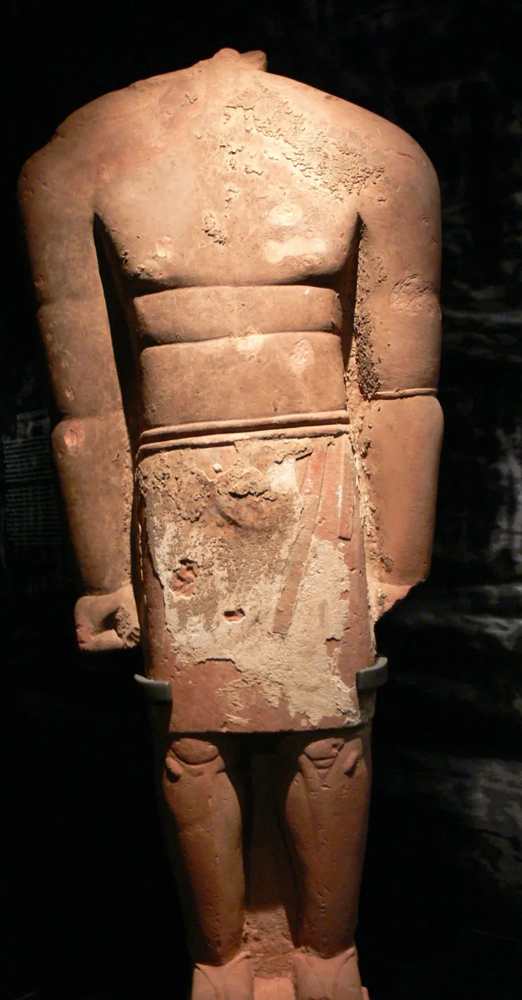

Muslim scholars have a real answer here. Say so before your friend does.
The Kaaba was a working pagan shrine. It held 360 idols until Muhammad cleansed it in 630 (Sahih al-Bukhari 4287).
Arabs already walked round it. They already kissed the Black Stone.
They already ran between Safa and Marwa. That run was tied to the idols Isaf and Na'ila.
Quran 2:158 had to allow it again.
Muslims still kiss or salute the Black Stone. Umar's unease is in the canon.
"I know that you are a stone and can neither benefit nor harm. Had I not seen the Prophet kissing you, I would not have kissed you" (Sahih al-Bukhari 1597).
Other hadith go further. The stone came down from paradise whiter than milk.
Sins made it black. It will speak on judgment day (Jami at-Tirmidhi 877, 961).
IslamQA 118085 turns the story round. Abraham and Ishmael built the Kaaba for one God (Quran 2:127).
The pagan rites came later and spoiled it. So Islam did not take up paganism.
It scraped paganism off an old shrine. Kissing the stone is ittiba', doing as the Prophet did.
It is not worship. Muslims cite Umar's own words to prove that.
The walk and the run recall Hagar's search for water.
The link with the older rites is in Islam's own record. Bukhari 4287 gives the idols.
Quran 2:158 had to allow the run again, which assumes the pagan tie. But there is no trace of an Abrahamic Kaaba before Islam.
It rests on the Quran alone. And the point about intent is real.
Umar's words work as a guard inside Islam.
Genuinely arguable, so be exact. The loud claim, that Muslims worship a stone, fails.
The fair claim stands. The central rite of Islam was kept from before Islam, and its back story has no evidence.
"Where does the evidence for an Abrahamic Kaaba come from, outside the Quran? I would like to read it."



They say Abraham built the Kaaba, and Islam only stripped the old rites off.
IslamQA 118085 answers that the story runs the other way. Abraham and Ishmael built the Kaaba for the worship of one God (Quran 2:127). The pagan rites came later and spoiled it. So Islam did not take up paganism. It scraped paganism off an old shrine and brought back the first thing.
Kissing the stone, IslamQA explains, is ittiba', doing as the Prophet did. It is expressly not worship. Muslims themselves quote Umar's words to prove the act carries no belief in the stone's power. The circling, and the run between Safa and Marwa, recall Abraham's story, and Hagar's search for water. Revelation made them holy again.
Arguable, so be exact: they do not worship the stone, but the back story is bare.
This is graded contested, and conservatively. The link between the rites and pre-Islamic paganism is a matter of Islamic record. Bukhari 4287 supplies the idols, and the fresh permission at 2:158 assumes the pagan tie. And the Abrahamic original has no support from before Islam. It rests wholly on the Quran's assertion, while the Ishmael case shows Genesis places Abraham nowhere near Mecca.
But the Muslim point about intent is real. Mainstream Islam expressly denies the stone any power, and Umar's canonical words work as a guard against idolatry inside Islam.
So the strong claim fails. Muslims do not worship a stone. The fair claim stands. Islam's central rite is a kept pagan circuit resting on an origin story with no evidence.